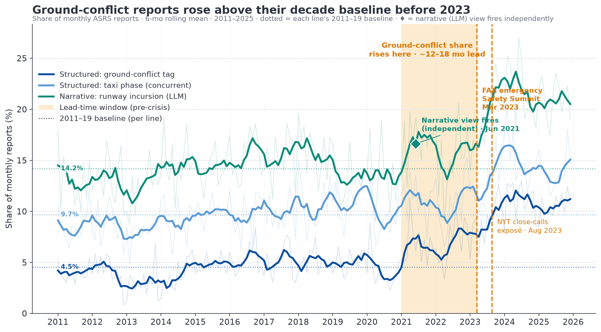
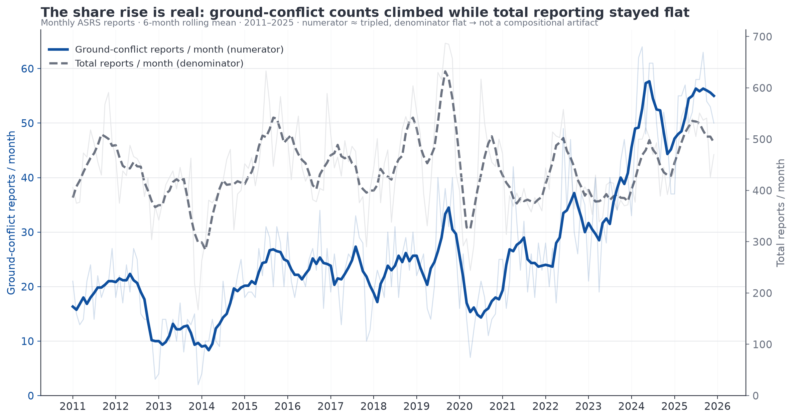
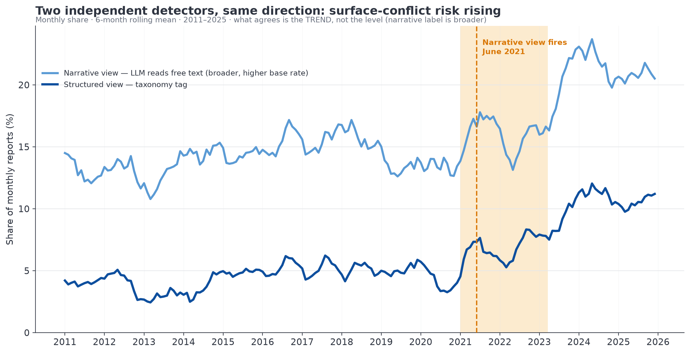
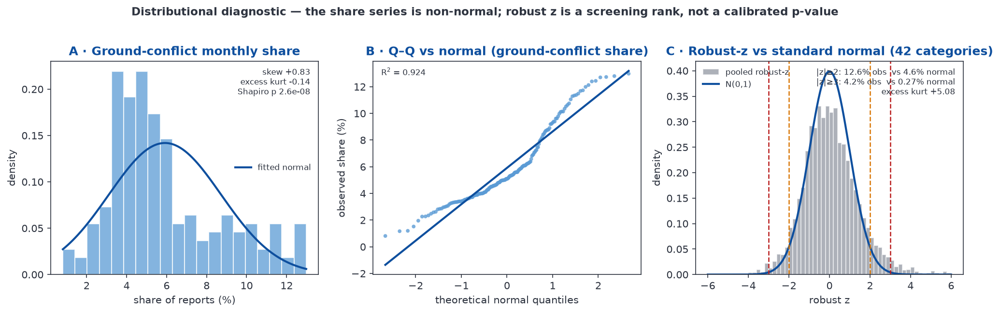
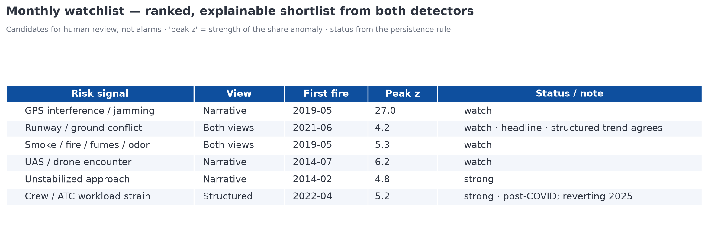

Surfacing emerging aviation-safety risk early — from public data
IATA Senior Data Scientist — technical case study. Data: NASA Aviation Safety Reporting System (ASRS), 80,047 reports, 2011–2025, US.
Accidents are rare and lagging; the near-misses that precede them are common and arrive first. This study asks whether publicly available data can surface those precursors before a risk is widely recognised — and demonstrates that it can, on a worked example.
Using 15 years of ASRS incident reports, two independent detectors were built on a single principle — track each risk category’s share of monthly reports (not raw counts) and flag a sustained, statistically anomalous rise. One detector reads the structured taxonomy codes; the other is a zero-shot language model reading the free-text narratives. Both moved early — one as a rising trend, one as a statistical fire:
Surface / runway “ground-conflict” near-misses began rising in 2021–2022 — roughly 12–18 months before the public inflection (the FAA’s March 2023 emergency Safety Summit and the August 2023 New York Times close-calls exposé). The structured ground-conflict tag roughly doubled (≈5% → 11% of reports, raw count tripled); the narrative model independently fired on runway incursions in June 2021.
The rise survives the obvious challenges: it is in the numerator not the denominator, it persists after normalising for the post-COVID traffic rebound (the incursion rate ran ~15% above pre-pandemic and severity spiked), and it pre-dates the summit (ruling out awareness-driven over-reporting). External FAA/DOT-OIG figures confirm both the rise and its 2024 easing.
The deliverable is not an accident predictor. It is a leading indicator and an operating model: the same pipeline produces a ranked monthly watchlist of what is emerging and where to look first — a triage queue for human analysts, months earlier than the lagging record would allow.
How should an “early-warning system” for aviation safety be interpreted? Not as accident prediction. Accidents are (thankfully) rare, and a model trained on them learns from the lagging record. The tractable, useful problem is detecting precursors trending upward before the adverse outcome is widely recognised — from data already held.
This reframing drives every subsequent choice:
This matches how the role’s domain actually operates: the value is in framing, reasoning, and communication of a credible early signal, not in a black-box predictor.
Source. NASA ASRS, 2011–2025: 80,047 reports after de-duplication by accession number (ACN), 127 columns, of which 79,572 carry a usable free-text narrative. Combined from 15 annual public extracts.
Grain and limitations (stated up front, because they bound every claim):
| Property | Reality | Consequence |
|---|---|---|
| Time | Date is YYYYMM only (month grain, 100% filled) |
Monthly series are the finest temporal resolution; no exact-date or intraday analysis |
| Location | No airport / origin–destination (de-identified by design); only facility type and US state | No airport-level hotspotting; geography limited to coarse slices |
| Reporting | Voluntary; total monthly volume swings (2019 peak, 2020 COVID trough) | Raw counts conflate “how much is reported” with “what happened” → drives the share-based metric (§3) |
| Latency | ~60-day processing lag | The most recent 2–3 months are under-reported and excluded from “fired” claims (shown but greyed) |
Well-populated signal carriers include Anomaly (99.9%, multi-label taxonomy of what went wrong), Contributing Factors / Situations, Person 1 | Human Factors, Aircraft 1 | Flight Phase (96.7%), and the Report 1 | Narrative free text (100%). Multi-label fields are "; "-joined and exploded so a report contributes to every category it lists.
A QA-first exploratory pass (production/build/P02_01-eda.ipynb) established schema integrity, temporal coverage, missingness, and reporting-bias diagnostics before any modelling.
The architecture is deliberately simple and transparent: one detection engine, fed by two independent labellers.
Every label — whether a structured tag or a narrative-derived label — is turned into a monthly series and run through identical logic:
s_c(t) = count_c(t) / total_reports(t). A signal is a shift in share, which controls for overall reporting propensity (the central ASRS caveat).z = (s_c(t) − median₂₄) / (1.4826 · MAD₂₄). Median/MAD (not mean/SD) so the baseline is not inflated by the very spikes being hunted.|z| ≥ 2 = watch, ≥ 3 = strong; a fire requires the threshold to hold for ≥ 3 consecutive months (kills one-off blips). Early-warning focuses on rising shares.peak_z × months_sustained), not alarms.Anomaly, Flight Phase, …). Precise, but only sees risks that already carry a code.The strongest signal is one where both views agree — a narrative theme rising in step with a structured category — because they are entirely separate pipelines with different blind spots.
Implementation note (honest record). The narrative labeller was prototyped on a local GLiNER2 model (free, CPU). At full coverage that path measured ~66 h on CPU for 80k narratives, so the production run used a hosted zero-shot model — OpenRouter
deepseek/deepseek-v4-flash, concurrent batched calls, across all 79,572 narratives. Only the labelling engine changed; the §3.1 detector logic is identical. (Output files retain agliner_label_*name for historical continuity.) Full reasoning inproduction/spec/P03_methodology.md§6.1 andresearch/notes/P04_signalB-scale-cost.md.
The structured detector surfaced 42 candidate series (26 with a persisted fire, 0 gated as taxonomy artifacts). The locked headline — chosen because it is falsifiable and externally checkable — is surface / ground-conflict near-misses, where a rising structured trend and a persisted narrative fire coincide.

The structured Conflict Ground Conflict share roughly doubled:
| Year | 2011 | 2013 | 2021 | 2023 | 2024 | 2025 |
|---|---|---|---|---|---|---|
| Ground-conflict share | 4.1% | 3.0% | 6.7% | 9.0% | 11.2% | 10.5% |
corroborated by the concurrent Taxi-phase rise (~8–11% → 15.2% in 2024). Independently, the narrative model fired on the runway incursion / ground conflict / surface movement label in June 2021 (persisted watch fire). Two methods, different pipelines, same trend and timing.
The most instructive detail: the structured share spiked above the alarm threshold repeatedly — its robust z reached ≈6, including in April 2021 — but never for three consecutive months (its longest watch run was 2), so the persistence rule never let it register a fire. The noisier structured series kept tripping and resetting; the narrative label rose smoothly enough to hold the 3-month rule and produced the only sustained fire — June 2021. Two detectors, two different failure modes — the argument for running both, not a weakness to hide.
| When | What | Source |
|---|---|---|
| Jun 2021 | Narrative detector fires on runway incursions | this analysis |
| 2021–2022 | Structured ground-conflict share inflects upward | this analysis |
| Jan / Feb 2023 | JFK (AA777 runway crossing) and Austin (SWA/FedEx ~150 ft) near-collisions | NTSB / press |
| Mar 2023 | FAA convenes emergency Aviation Safety Summit | FAA newsroom |
| Aug 2023 | NYT: “Airline Close Calls Happen Far More Often Than Previously Known” | NYT |
The ASRS-derived signal led the widely-recognised crisis by roughly 12–18 months. Notably, the FAA’s own response was to mine its ASIAS safety database for emerging trends — reactively, after the events. The same idea, applied proactively, is exactly what this method demonstrates.
No. Checked directly against the count series:
| Year | Ground-conflict count (numerator) | Total reports (denominator) | Share |
|---|---|---|---|
| 2011 | 230 | 5,646 | 4.1% |
| 2021 | 305 | 4,571 | 6.7% |
| 2023 | 411 | 4,589 | 9.0% |
| 2024 | 606 | 5,427 | 11.2% |
| 2025 | 642 | 6,109 | 10.5% |

The numerator roughly tripled while the denominator stayed in a flat ~4,500–6,100/yr band. Because Anomaly is multi-label, category shares do not sum to 100% — one category rising does not mechanically force another down, so the naive pie-slice artifact does not apply. External absolute counts rose independently.
The single biggest challenge — more flying ⇒ more conflicts, mechanically — is ruled out on two counts:
Conflict Ground Conflict exists from 2011 (taxonomy_suspect = False).
The robust z carries a normal-theory reading (z ≥ 2 ≈ a 1-in-20 deviation), so the share distribution was checked directly (P02_make_normality_diagnostic.py). It is not normal: the ground-conflict share is right-skewed (Shapiro–Wilk p ≈ 3×10⁻⁸), and the pooled robust-z across all 42 candidate categories is fat-tailed (excess kurtosis +5.1) — empirically |z| ≥ 3 occurs in 4.2% of category-months versus the 0.27% normality would imply (~15×). This does not undermine the method: median and MAD assume no distribution, so the detector stays valid. The consequence is interpretive — the 2/3 cut-offs are used as an empirical screening rank, not calibrated p-values (no significance level is ever claimed) — and the fat tails are precisely why the persistence rule, not a p-value, is the real false-positive control: a single extreme month is common, so a signal must hold for three.

The narrative LLM is the novel half of the method and carries the formal June-2021 fire, so its output was spot-checked. 30 narratives the model flagged with the runway label were independently adjudicated (positives only → precision, not recall; confidence-stratified, seeded for reproducibility — production/build/P04_validate_narrative_labels.py):
| Metric | Value |
|---|---|
| Precision — broad (genuinely surface/ground-related) | 70% (21/30) |
| Precision — strict (true incursion/conflict near-miss) | 37% (11/30) |
| Precision by confidence ≥0.95 / 0.90 / ≤0.85 | 88% (7/8) / 70% (7/10) / 58% (7/12) |
The confidence bands are small (n = 8 / 10 / 12), so read the gradient as directional rather than precise — the takeaway is simply that model confidence is informative.
Dominant failure mode: 8 of 9 false positives are airborne near-mid-air collisions the model tags as “conflict” — the word “conflict” in the label bleeds airborne events into a surface label. A confidence threshold (~0.95) or an airborne-vs-surface guard would sharpen it materially.
Why the headline still holds: the label is broad (it flags ~15.7% of narratives; base rate ~13% even in 2011), so its absolute level is overstated. The early-warning claim therefore rests on the trend (the rise and the June-2021 fire) and on agreement with the cleaner structured tag — which does not share this failure mode — not on the narrative level. A 70%-broad / 37%-strict precision is acceptable for a triage shortlist; it would not be acceptable for an automated count, which is precisely why the output is framed as a candidate for review.
This worked example is a proof of concept. The same pipeline already emits a ranked monthly watchlist from both detectors — a short, explainable list of what is emerging and where to look first.

Value to a safety team: instead of waiting for the lagging accident/incident record, an analyst gets a prioritised, explainable queue of rising precursors — each traceable to the reports behind it — months earlier. It supports decisions about where to focus limited inspection, audit, and outreach attention.
How it would slot into practice: - Monthly run on the latest ASRS extract; the freshest 2 months flagged soft (reporting lag). - Human-in-the-loop triage — candidates, not alarms; an analyst confirms or dismisses, building a feedback record. - Cross-source corroboration for anything that fires, exactly as done here.
What it is: a leading indicator that risk is rising; low-cost, public, explainable, reproducible; corroborated three ways (narrative fire + structured trend + external sources).
What it isn’t: - Not accident prediction — these are precursors, not accidents. - Not causal. The leading hypothesis is post-COVID understaffing plus the traffic rebound — but only the symptom is observed, not the cause. - Not bias-free. Voluntary-reporting bias is mitigated (share, not counts) — not eliminated. - Coarse. Monthly, US-only, de-identified (no airport). These figures and the FAA’s agree in direction, not magnitude.
| Component | Location |
|---|---|
| EDA / QA | production/build/P02_01-eda.ipynb |
| Signal A (structured) | production/build/P04_02-structured-signals.ipynb |
| Signal B (narrative LLM + discovery) | production/build/P04_03-narrative-signals.ipynb |
| Method spec (single source of truth) | production/spec/P03_methodology.md |
| External corroboration & bias rule-outs | research/notes/P05_signal-corroboration.md |
| Narrative validation | research/notes/P04_narrative-validation.md |
| Distributional / normality diagnostic | production/build/P02_make_normality_diagnostic.py → production/output/eda/P02_normality_diagnostic.png |
| Figures & chart builders | production/output/, production/build/P07_make_*.py (+ P04_make_narrative_label_chart.py) |
| Presentation | writing/P07_deck.pdf |
requirements.txt (Polars, pandas, scikit-learn, matplotlib, httpx).deepseek/deepseek-v4-flash (needs OPENROUTER_API_KEY); the derived label parquets are committed so Signal B is inspectable without re-running the paid step.Authorship & provenance: this analysis was produced with AI-agent assistance under human direction; every material contribution is logged in provenance-ledger.md with author, timestamp, and change. The transparency is deliberate — the method, the self-corrections (e.g. the structured z-detector spiking repeatedly but never holding the persistence rule, so the narrative label carried the fire), and the model pivot are all part of the record.